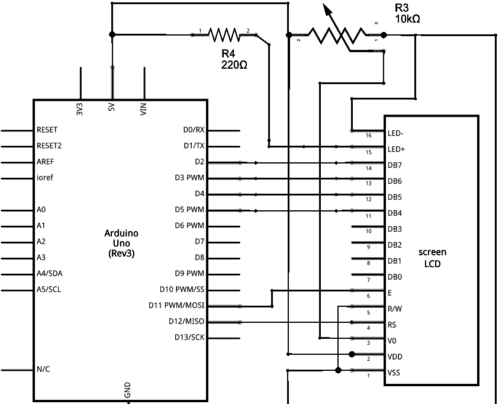
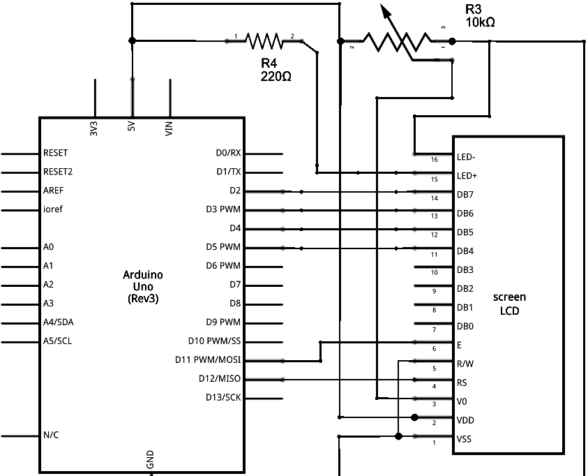

[January 2022 - May 2022]
Built with Miles Yang, this mini-robot utilized the Arduino Mega, Servo motors, and various sensors to follow shapes. The robot is capable of line following, identifying colors, distinguishing between reflective and matte surfaces, and communicating wirelessly with other robots
- Skills: Microcontrollers, C, Circuit Design
-
This robot was made with an emphasis on learning good design process practices. As such, a Gantt Chart was made to keep track of the project timeline,
and regular updates are included as well. In the following reports, you'll find screening matrices, scoring matrices, cost breakdowns, and results analyses.
Features
Scrolling Image Gallery:
 

4 QTI sensors were integrated to the robot, and a traditional line follow program was tuned. The line follow code is programmed to accomodating sharp turns, pause at intersections of lines, and search for nearby lines if lost. In the image gallery you'll find the circuit schematic for the line follow program. In addition, a QTI sensor was used to detect the presence of a shiny mirror surface.
An RGB sensor mounted to the side of the robot was used to identify what color the robot was on. Code for the RGB sensor consisted of if statements to flash the RGB LED a certain color based on a color ratio from the sensor that was experimentally determined
An X-Bee module was utilized to enable bluetooth communication between nearby robots. Both sending and receiving data was implemented across the bluetooth protocol, and used to evaluate the status of nearby robots.
An LCD was used to display whether the object observed was either metal or plastic and communicate with other robots. The code for communication involved bit shifting and continuously update once every robot sent out their signal. The code for the LCD involved displaying the information on a scrolling display